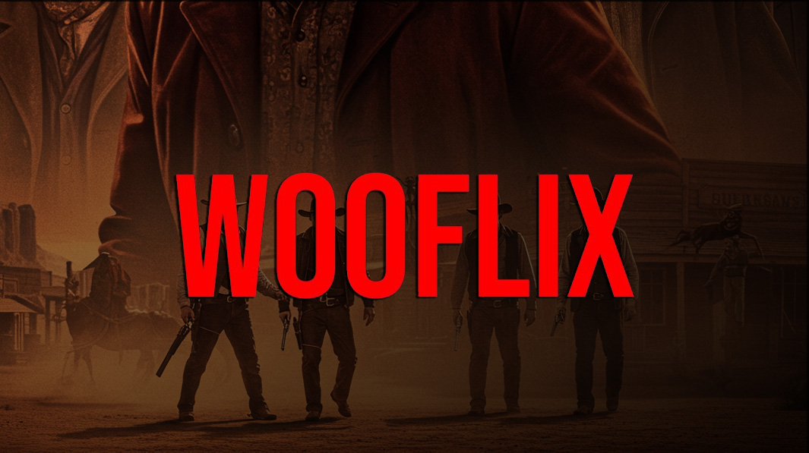

Wooflix: Your Ultimate Hub for Free Movie Streaming
Wooflix has become a go-to destination for movie enthusiasts seeking cost-free streaming without compromises. This guide dives into Wooflix’s standout features, catalogs, and tips to maximize your viewing experience. Whether you’re craving blockbusters or hidden gems, learn how to navigate the site and discover endless entertainment options at your fingertips.

What is Wooflix?
Wooflix is a free online streaming platform offering a vast selection of films, series, and documentaries without subscription fees. Its intuitive interface makes browsing simple, while advanced search filters help you find genres ranging from action blockbusters to indie favorites in seconds.
"Wooflix combines ease of use with a diverse library, making it a standout free streaming platform," says Sarah Thompson, Digital Media Consultant.
Exploring the Wooflix Website
Tired of generic streaming sites? Ready for a fresh, ad-light experience? Wooflix streams straight to your screen without the clutter. When you visit the wooflix website, you’ll be greeted by a sleek homepage showcasing trending titles and curated lists. The main menu divides content into genres, new releases, and top-rated picks, ensuring you can quickly locate your next watch.
- Genre Filters: Browse by category like drama, comedy, or horror.
- Search Bar: Directly find movies or series by title or actor.
- Playlists: Save favorites and create custom watchlists.
- User Ratings: See community scores to guide your selection.
Wooflix Catalog Highlights
Dive into the wooflix catalog, featuring thousands of titles organized by genre, release year, and popularity. From timeless classics to the latest indie releases, the catalog maps out a world of cinematic possibilities.
Free Movies Library on Wooflix
The wooflix free movies library is updated weekly, adding fresh titles and seasonal specials. No strings attached—simply click play and enjoy free streaming of high-quality content whenever you like.
| Feature | Wooflix | Other Free Platforms |
|---|---|---|
| Subscription Fee | None | Varies |
| Ads | Limited pre-roll | Frequent mid-roll |
| Catalog Size | 5,000+ titles | 2,000–4,000 titles |
| Video Quality | Up to 1080p HD | Up to 720p |
| Registration | Optional | Required |
How to Stream Movies on Wooflix Net
Getting started with wooflix streaming is simple and fast. Follow these steps to dive into free content without delay:
- Go to www.wooflix.tv in your browser.
- Create a free account or use the guest mode to skip registration.
- Use the search bar or browse the wooflix catalog to find a movie.
- Click the “Play” button to start streaming instantly.
- Adjust quality settings and enable subtitles if needed.
Tips for Optimal Streaming Quality
To ensure the smoothest playback, consider the following:
- Stable Connection: Use a reliable Wi-Fi or wired network.
- Close Background Apps: Free up bandwidth for Wooflix streaming.
- Enable HD: Select the highest available resolution in settings.
- Ad Blocker: Some ads are necessary, but an approved ad blocker can reduce interruptions.
"For best quality, always connect to a stable Wi-Fi and select HD settings on Wooflix," recommends Michael Barnes, Streaming Technology Analyst.
Wooflix vs Other Free Streaming Platforms
While many free streaming sites exist, wooflix streaming stands out for its minimal ad interruptions, extensive catalog, and user-friendly net interface. Popular alternatives include Kanopy, Popcornflix, and Pluto TV, but few match Wooflix’s combination of convenience and quality.
Conclusion
Wooflix offers a unique, ad-light free streaming experience with thousands of movies and series available at no cost. With its intuitive catalog, optional registration, and HD playback, Wooflix is your go-to choice for endless entertainment. Ready to dive in? Visit Wooflix today and start streaming free movies instantly!
"With its intuitive catalog and zero-cost access, Wooflix is poised to redefine free streaming," notes Dr. Emma Clarke, Media Innovation Expert.
FAQ
Who can benefit from using Wooflix free movies?
Anyone with an internet connection and a love for movies can enjoy Wooflix free streaming. Whether you’re a casual viewer or a film buff, Wooflix’s ad-supported, no-cost model provides easy access to diverse content on any device.
What types of movies does the Wooflix catalog offer?
The Wooflix catalog features genres like action, comedy, drama, horror, sci-fi, and documentaries. It includes classic films, indie hits, international blockbusters, and family-friendly titles, ensuring there’s always something to suit every mood and preference.
When was Wooflix launched, and is registration required?
Wooflix launched in early 2023 as a free streaming newcomer. While creating an account offers personalized watchlists and recommendations, registration is optional. Guests can still access the full catalog and start watching immediately without entering personal details.
Why choose Wooflix over other free streaming sites?
Choose Wooflix for its expansive library of over 5,000 titles, minimal ad interruptions, and HD playback up to 1080p. Its intuitive interface and optional registration make it faster and more user-friendly than many competitors.
How do I access Wooflix streaming on different devices?
Access Wooflix on desktops via any modern browser at www.wooflix.tv. For mobile phones and tablets, simply open Safari or Chrome and visit the site. Smart TVs and streaming devices with browsers also support Wooflix without needing a dedicated app.
Is it legal and safe to watch free movies on Wooflix net?
Wooflix operates legally by licensing content and earning revenue through limited ads. The platform is secured with HTTPS encryption, protecting your data and device. Always ensure you access the official wooflix.net or www.wooflix.tv sites to avoid imitators.